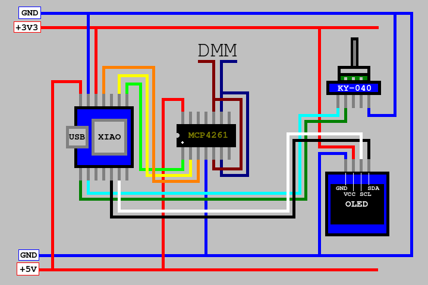

|
Build Notes for the W8BH LED Testerby Ken, KM4NFQ "Not Fully Qualified"This is how I laid out my breadboard. The KY-040 Rotary Encoder Module that I used is not shown, but its placement is indicated. Note that there is a 3V3 power rail labeled at the top of the breadboard image, and a 5V power rail labeled at the bottom.
I connected the GND, 3V3, and 5V pins to the XIAO. The 3V3 power rail is used by the OLED. Next I connected the OLED to the XIAO and the 3V3 power rail. I added the MCP4261 digipot and wired it up. The MCP4261 digipot uses the 5V power rail. The wires for the parallel resistors are connected. I added my KY-040 Rotary Encoder Module and wired it up.  A 100 OHM resistor and a RED LED are added and wired up. XIAO pin 8 (D7) connected to the 3V3 power rail. |